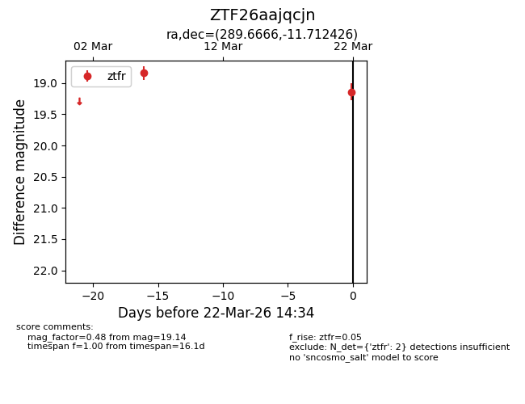
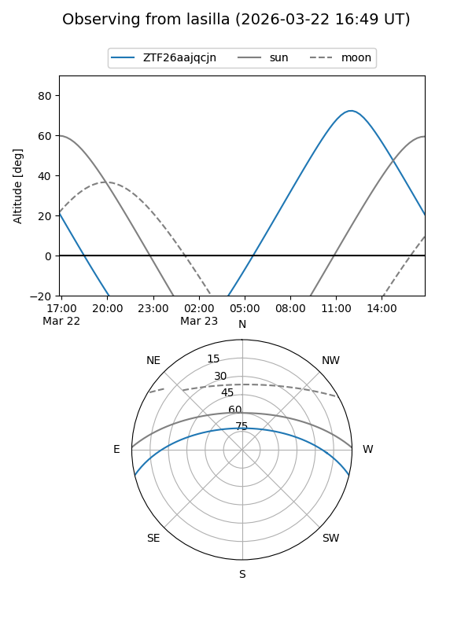
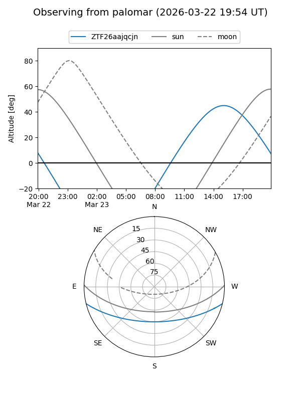

ZTF26aajqcjn
Target ZTF26aajqcjn at 2026-03-22 14:36
Aliases and brokers:
FINK: link
Lasair: link
ALeRCE: link
alt names
ZTF26aajqcjn (ztf,fink_ztf)
Coordinates:
equatorial (ra, dec) = 289.6666,-11.71243
equatorial (HMS+DMS) = 19:18:39.97,-11:42:44.73
galactic (l, b) = (25.4468,-11.29471)
Flags:
Photometry:
last ztfr=19.14
2 ztfr detections
Lightcurve

Visibility


Additional plots